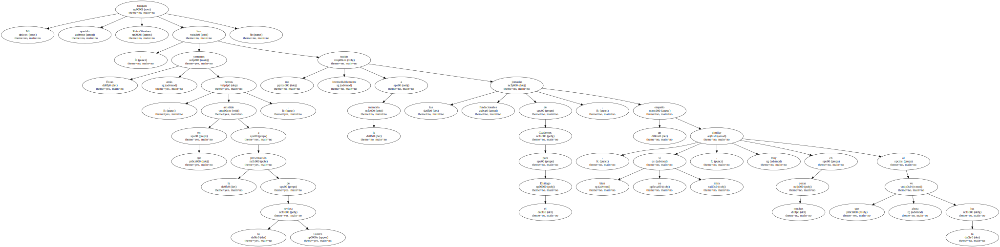
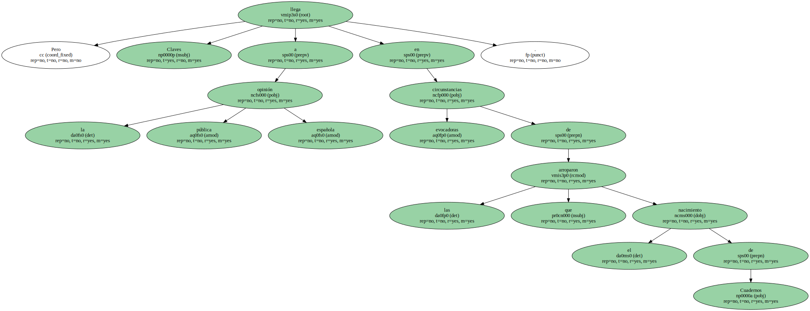
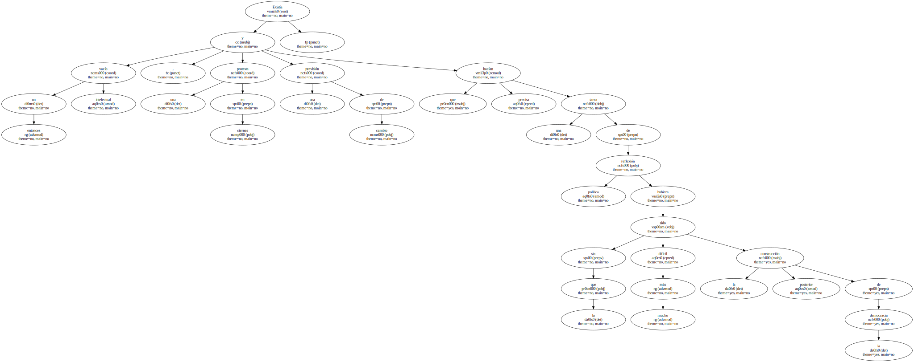
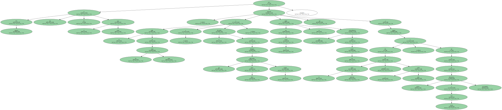

Mi querido Joaquín Ruiz-Giménez : Estas semanas atrás , en que hemos asistido a la presentación de la revista Claves , me han traído irremediablemente a la memoria las jornadas fundacionales de Cuadernos para el Diálogo , un empeño , si bien se mira , muy similar en muchas cosas al que ahora ve la luz.
Desde luego , poco o nada tienen que ver tu significación intelectual y tu posicionamiento político con los de Javier Pradera o Fernando Savater , como no sea el compromiso común con la democracia y esa dignidad en el comportamiento público de que hacéis gala y que cada día resulta más escasa entre nosotros.

Pero Claves llega a la opinión pública española en circunstancias evocadoras de las que arroparon el nacimiento de Cuadernos.
Existía entonces un vacío intelectual , una protesta en ciernes y una previsión de cambio que hacían precisa una tarea de reflexión política sin la que hubiera sido mucho más difícil la posterior construcción de la democracia.
Por supuesto éste no es el caso actual , pero la caída de los viejos mitos y el derrumbe de ideologías que hasta ahora gobernaban el mundo , o por lo menos la utopía que sobre ese mundo proyectábamos , nos autorizan a suponer que ese vacío intelectual se ha vuelto a abrir , y que es de dimensiones mucho más graves y preocupantes.
